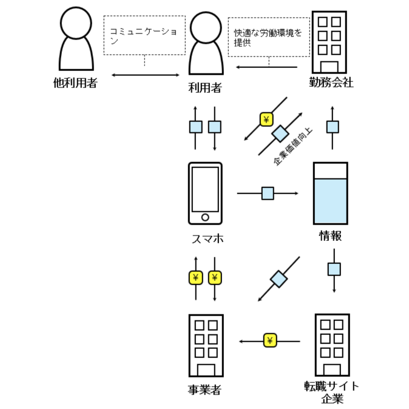

第２回
ビジネス

私たちが考えたのは、労働環境改善に利用できるアプリです。
アプリがプラットフォームとなり、働く人が自身の所属する企業の労働環境を評価するものです。
企業はこのアプリを利用することで労働環境改善に努めることができるうえ、アプリの使用をアピールすることで企業価値を高めることができます。
さらに、利用者が職場の人と交流ができるSNSとしての機能を付けたり、転職サイト企業と連携したりすることで、
職場改善のその先をも見据えたアプリにしたいと考えています。
他にも、学生には学校の環境を評価できるものも検討しています。